Core Components
Macro Browser's architecture consists of several core components that work together to provide a secure, private, and Web3-enabled browsing experience. This page provides an overview of these components and their interactions.
Component Overview

Component Descriptions
1. Browser Engine
The core browser engine is based on Chromium (via Electron) with Google services removed. It handles:
- Content rendering: Displaying web pages and executing JavaScript
- Tab management: Creating, updating, and managing browser tabs
- Navigation: URL parsing, history, and page navigation
- Extension system: Limited support for privacy-focused extensions
2. Privacy Layer
The privacy layer enhances security and preserves user privacy with:
- Ad blocker: Prevents ads from loading and displaying
- Tracker prevention: Blocks known tracking scripts and mechanisms
- Fingerprinting protection: Reduces browser fingerprinting surface
- Secure connections: Enforces HTTPS and secure connection practices
- Content filtering: Optional filtering of potentially harmful content
3. Network Layer
The network layer manages all network communications:
- P2P VPN: Peer-to-peer virtual private network for enhanced privacy
- Network requests: Handles HTTP/HTTPS requests and responses
- Cache system: Efficient caching with privacy-preserving features
- DNS resolution: Secure DNS resolution (DoH/DoT)
- Proxy support: Configuration for additional proxies if needed
4. Web3 Layer
The Web3 layer enables blockchain and cryptocurrency functionality:
- Wallet connector: Interface for connecting external wallets
- DApp interface: Support for decentralized application interactions
- Transaction manager: Handling blockchain transactions securely
- Network switcher: Support for different blockchain networks
- Contract interaction: Interface for smart contract calls
5. AI Layer
The AI layer provides intelligent features:
- Search engine: AI-powered search capabilities
- Query processor: Processes and routes search queries
- Answer generation: Creates direct answers when possible
- Privacy wrapper: Ensures AI queries preserve privacy
6. UI Layer
The UI layer creates the user interface:
- Main window: Browser chrome and controls
- New tab page: Customized start/new tab experience
- Settings interface: Configuration for all browser features
- Notifications: User alerts and notification system
- Theme system: Visual styling including dark mode
Component Communication
Components communicate through well-defined interfaces that maintain security boundaries:
- Event system: Publish-subscribe pattern for loose coupling
- Message passing: Secure IPC between browser processes
- State management: Consistent state across components
- API boundaries: Clean interfaces between major components
Quality Attributes
These components are designed with the following quality attributes in mind:
- Security: Protection against common web vulnerabilities
- Privacy: Data minimization and user control
- Performance: Efficient resource usage and fast rendering
- Reliability: Stable operation and graceful error handling
- Maintainability: Clean separation of concerns for easier updates
- Extensibility: Ability to add new features without major refactoring
For detailed information on each component, see their respective pages in the documentation.